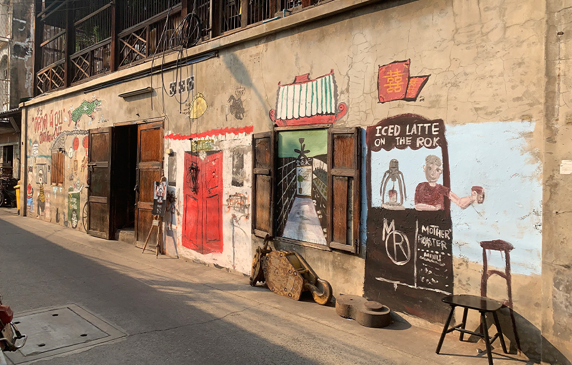

Home
Service
Portfolio
Blog
Contact

Information
2020.08.20
｢Webの神様｣ 動画UP！
2020.08.17
｢Webの神様｣ 動画UP！
2020.08.08
夏季休業のお知らせ
2020.08.05
サイトをオープンしました！
Gourmet
新しいお店の情報を追加する
画像のURL：
店名：
エリア：
おすすめメニュー：
追加する
検索
リセット
トミガヤ テラス
渋谷
代々木公園
代々木八幡
チキンパエリア
削除
ボンジョリーナ
池の上
下北沢
イタリアンランチ
削除
揚州商人
渋谷センター街
スーラータンメン
削除
カレー食堂 心
下北沢
骨付きチキンのスープカレー
削除
博多食堂
渋谷
神泉
博多ラーメン
削除
UeCONA
渋谷
道玄坂
シカゴピザ
削除